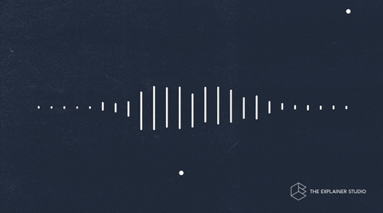

What You Should Know - GarageBand: Spooky Story and Numerical Patterns
 Important Vocabulary
Important Vocabulary
- Fraction - a value that represents a portion of a whole
- Numerator - the value found at the top of a fraction that represents how many parts
- Denominator - the value found at the bottom of a fraction that represents the total number of parts
- Operation - addition, subtraction, multiplication, and division
- Numerical Pattern - sequence of numbers created from a given rule
Select each item to learn more.
Theme Music
Effective horror film music is not just about using a spooky film score that plays when the villain comes on screen. Finding the right jump scare sound effect to make audiences leap out of their seats can be more difficult than you think.
Music Composition
Composers make music. Since horror movies rely on music, composers carefully consider how to use familiar sounds in unusual ways. Composers change sounds in different ways to help them tell a story.
Rhythm
The word rhythm is used to describe a specific pattern of sounds. This pattern of sounds is made up of regular and irregular beats that are repeated throughout the song. A heartbeat, ticking clock, footsteps, and a galloping horse all have rhythm.
Dynamics
Dynamics describes how loud, soft, and intense music is. Musicians will change whether they play a part quietly or loudly depending on how they want the listener to feel.
Pitch
Pitch is how high or low the note or sound goes. Have you ever noticed how people’s voices often get higher when they feel nervous? Composers may create this in their music to help add feeling to their music.

Dissonance
Dissonance refers to a lack of harmony in music. Some musical notes sound good together, creating harmony. Some don't and they make us feel icky or uncomfortable. An example of a creepy combination is the tritone—a musical chord that can annoy the ears and suggest something is terribly wrong.
Silence
Silence is no sound. In our day-to-day life, we don’t usually notice all the noise that surrounds us. Stop what you’re doing right now and listen. Even if you are alone in an empty room, you surely hear many noises. We normally just tune out these everyday sounds, so on the few occasions when we are alone in the dead of night and find ourselves surrounded by total silence, it can be scary!

Creepy Cues
 The right music cue or sound effect can make or break a scary moment. When the jump scare comes, you barely notice it. But when you add the slow upward creeping of sound, and then the big "BOOM" at the focal moment, you get a jolt even when you know it’s coming.
The right music cue or sound effect can make or break a scary moment. When the jump scare comes, you barely notice it. But when you add the slow upward creeping of sound, and then the big "BOOM" at the focal moment, you get a jolt even when you know it’s coming.
Non-linear sounds
 Non-linear sounds are sound waves that have a very high range and a higher volume compared to other sounds. They often contain repeated jumps, unusual harmonies, or chaos and noise – and you can create them by quickly changing the speed of acoustic instruments.
Non-linear sounds are sound waves that have a very high range and a higher volume compared to other sounds. They often contain repeated jumps, unusual harmonies, or chaos and noise – and you can create them by quickly changing the speed of acoustic instruments.
Non-linear sounds, like the cry of an animal or a human scream, are scary to us because they extend beyond the normal range of the vocal cords. Our brains have grown to understand the strangeness in these sounds, so we instantly know something is wrong or that there’s danger close by.
Multiplying Fractions and Whole Numbers
You can multiply a fraction by a whole number by writing a sequence of operations. For , you can represent the product as . This means you multiply the numerator of the fraction by the whole number, then divide by the denominator.
For example, to evaluate , you can rewrite this as a sequence of operations as shown below.
Numerical Patterns
A numerical pattern is a sequence of numbers created from a given rule. Rules can include one or more operations, such as addition, subtraction, multiplication, or division.
You can create a numerical pattern by choosing a starting number and applying your chosen rule to get the next number in the sequence.
For example, starting with 0 and applying the rule “add by 5” gives the following numerical pattern.
|
“add by 5” rule |
|
0 |
|
5 |
|
10 |
|
15 |
|
20 |
Starting with 0 and applying the rule “add by 10” gives the following numerical pattern.
|
“add by 10” rule |
|
0 |
|
10 |
|
20 |
|
30 |
|
40 |
You can generate ordered pairs using the corresponding numbers. Use the first pattern for the x-value and use the second pattern for the y-value. Placing the values in a table helps organize the corresponding values.
|
x-value |
y-value |
ordered pair |
|
0 |
0 |
(0, 0) |
|
5 |
10 |
(5, 10) |
|
10 |
20 |
(10, 20) |
|
15 |
30 |
(15, 30) |
|
20 |
40 |
(20, 40) |
We can identify the relationship between the two sequences. Each value in the second sequence is twice the amount of the value in the first sequence.
To graph the ordered pairs on the coordinate plane:
- Move right for the x-value.
- Move up for the y-value.
- Plot your point and label it.

Career Connection and Real-World Application
Music Therapists
Music therapists use different types of music to help their clients with their physical health, communication skills, or their social and emotional well-being. They design custom music sessions based on a client’s needs, which can include discussions of song lyrics, writing songs, or just listening to music.

Recording Engineers
Recording engineers are responsible for the technical aspects of a music recording session. They check that recordings have good quality sound and appropriate timing. They also make sure that the final product meets the standards of the artists and producers.